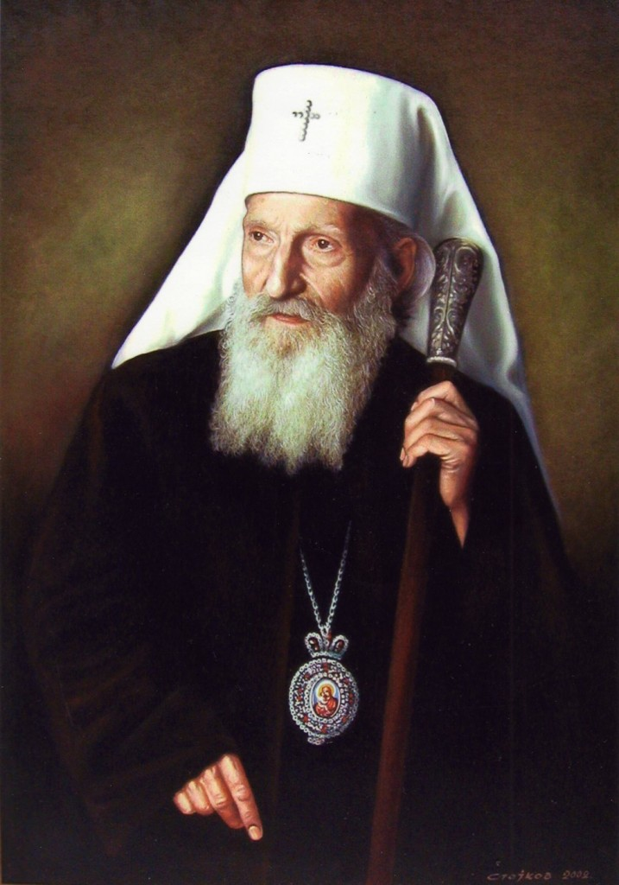

PATRIJARH PAVLE -CITATI I IZREKE

Patrijarh Pavle je u periodu od 1990. do 2009. godine bio vrhovni poglavar Srpske pravoslavne crkve, 44. po redu. Njegovo puno ime i titula glasili su Njegova svetost arhiepiskop pećki, mitropolit beogradsko-karlovački i patrijarh srpski gospodin Pavle.
Kao Gojko Stojčević rođen je 11. septembra 1914. godineu selu Kućanci, koje je tada pripadalo Austrougarskoj, a sada se nalazi na teritoriji Hrvatske. Zamonašio se u manastiru Blagoveštenju 1948. godine, kada je dobio ime po apostolu Pavlu. Preminuo je u Beogradu 15. novembra 2009. godine.
Pročitajte neke od njegovih najlepših citata.
Da je Bog hteo da čovek puši, ugradio bi mu odžak.
Čuvajte i neprijatelje svoje i molite se za njih jer ne znaju šta rade
Čuvajmo se od neljudi, ali se još više čuvajmo da i mi ne postanemo neljudi.